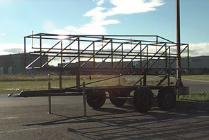
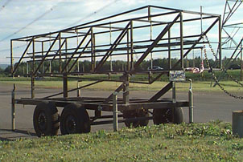
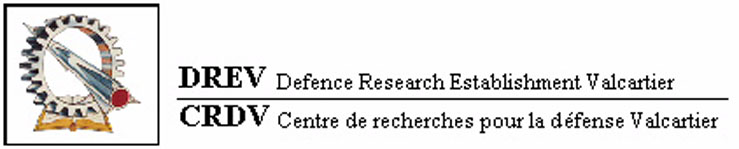

Le Groupe Aérospatial de l'Université Laval (GAUL) procédera en fin de semaine au lancement d'une fusée expérimentale. Réalisé en étroite collaboration avec le Centre de Recherches pour la Défense Valcartier (CRDV) , cet événement concrétisera le travail de plus de deux années d'efforts d'étudiants et de jeunes ingénieurs formés à l'Université Laval.
Le lancement de la fusée expérimentale Apollon est prévu pour samedi le 13 septembre, à 13h30, à la base militaire de Valcartier. L'accès au site est sur invitation seulement.
Apollon, quatrième fusée expérimentale du GAUL, emportera avec elle plusieurs expériences dont les résultats seront enregistrés à bord et transmis au sol par télémesure. La fusée comporte deux étages qui se sépareront en vol. Entre autres, une camera vidéo fournira des images de la séparation.
| Heure | Durée | Chrono | Actions |
|---|---|---|---|
| Arrivée des invités au CRDV | |||
| Départ pour l'aire de lancement | |||
| Briefing général sécurité | |||
| Activation chronomètre | |||
| Départ des équipes aux zones attribuées | |||
| Appel postes d'observations (1) | |||
| Appel météo (1) | |||
| Mode sécurité de l'électronique Apollon | |||
| Mise en marche de l'électronique Apollon (1) | |||
| Vérification télémesure (1) | |||
| Appel météo (2) | |||
| Fermeture électronique Apollon + silence radio | |||
| Évacuation du GAUL de la zone tir | |||
| Insertion propulseur C14 | |||
| Connection du système de mise à feu | |||
| Mode lancement de l'électronique Apollon | |||
| Mise en marche de l'électronique Apollon (2) | |||
| Vérification télémesure (2) | |||
| Évacuation pyrotechniciens | |||
| Appel responsable invités et silence absolu | |||
0.5 min | Appel postes observation (2) Autorisation responsable météo | ||
0.5 min | Autorisation directeur mécanique GAUL Autorisation directeur électronique | ||
0.5 min | Autorisation directeur logistique GAUL Autorisation directeur tir CRDV | ||
H-0 | Décompte final Mise a feu |
Voici la rampe de lancement qui sera utilisée pour le lancement d'Apollon.
 |  |
Toutes les données du vol et des expériences d'Apollon sont retransmises par télémesure à l'aide d'un émetteur FM utilisant la modulation FSK. Au sol, le signal est capte par un récepteur FM ICOM IC-R7000 prêté par Les Produits Electroniques ELKEL Ltee.
